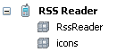
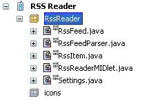
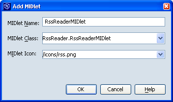

新しいモバイルアプリケーションプロジェクトを作成する
「ファイル」>「新規プロジェクト」(Ctrl-Shift-N キー) を選択します。「カテゴリ」で「モバイル」を選択します
「プロジェクト」で「モバイルアプリケーション」を選択します。「次へ」をクリックします。
「プロジェクト名」で RSS Reader と入力します。
「プロジェクトの場所」をローカルコンピュータ上の任意のフォルダに変更します。
「主プロジェクトとして設定」チェックボックスを選択します
「Hello MIDlet を作成」チェックボックスの選択を解除します
「完了」をクリックします。
この時点で、「プロジェクト」ウィンドウのプロジェクトノードは次のようになっているはずです。

ソースファイル用とアプリケーションアイコン用の新しい Java パッケージを作成する
「プロジェクト」ウィンドウで「RSS Reader」プロジェクトノードを右クリックし、「新規」>「Java パッケージ」を選択します
「パッケージ名」で RssReader と入力します。
「完了」をクリックします。
先のアクションを繰り返して icons パッケージを追加します

これで、ソースコードファイルとアプリケーションアイコンで必要なパッケージが用意されました。

プロジェクトを構成する
「プロジェクト」ウィンドウで「RSS Reader」プロジェクトノードを右クリックし、「プロパティー」を選択します。
「アプリケーション記述子」>「属性」を選択します。
汎用属性のリストで「MIDlet-Vendor」行を選択し、「編集」をクリックします。
「値」で、自分の名前を入力します。
「了解」ボタンをクリックして編集ウィンドウを閉じます。
「構築」>「ライブラリおよびリソース」を選択します。
「Jar/Zip を追加」をクリックします。
ダウンロードした kxml2-min.jar ファイルを参照します。
次に、コンピュータにダウンロードした kXML ライブラリへの参照を追加します。
kXML ライブラリへの参照を追加したので、kXML パーサーをアプリケーション内で使用できます。
ソースコードファイルの作成
次に、このプロジェクトのソースコードを作成します。この時点で、「要件」節で言及した既存のソースコードファイルのダウンロードが完了しているはずです。それらを、プロジェクトフォルダの src/RssReader サブフォルダに移動するようにしてください。
RssReader フォルダへのソースコードファイルのコピーが完了すると、「プロジェクト」ウィンドウの RssReader パッケージが、次の図と同じようになっているはずです。プロジェクトウィンドウ内のパッケージの内容を更新するのに、数秒かかる場合があります。

準備の整ったソースコードがない場合は、「新規」>「Java クラス」または「新規」>「Midlet」機能を使用してから独自のコードを記述します。
アプリケーションにアイコンを追加する
次の画像を右クリックし、それを RSS Reader プロジェクトの src/icons/ サブフォルダにダウンロードします。
「プロジェクト」ウィンドウで「RSS Reader」プロジェクトノードを右クリックし、「プロパティー」を選択します。
「アプリケーション記述子」>「MIDlet」を選択します。
「追加」をクリックします。
「MIDlet アイコン」で /icons/rss.png を選択します。
「了解」ボタンをクリックすることで両方のウィンドウを閉じます。
次に、モバイルアプリケーションにアイコンを追加します。
NetBeans IDE はすべてのフィールドを設定できるだけの賢さを備えているので、アプリケーションに含めるアイコンを選択するだけで済みます。
